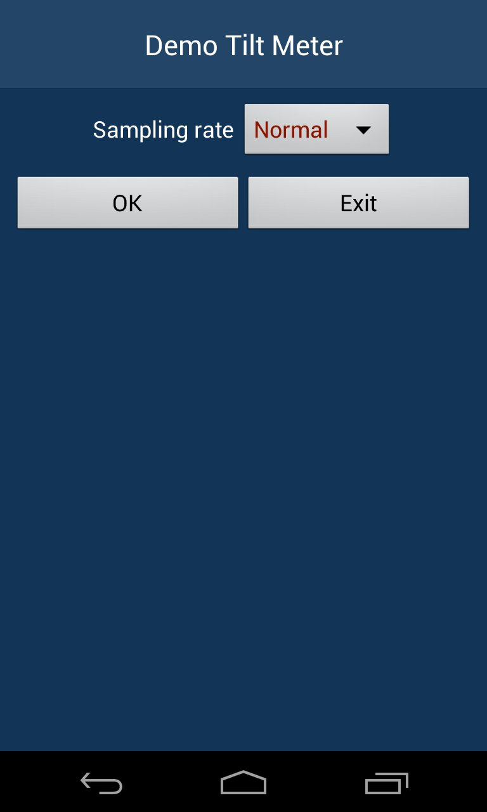
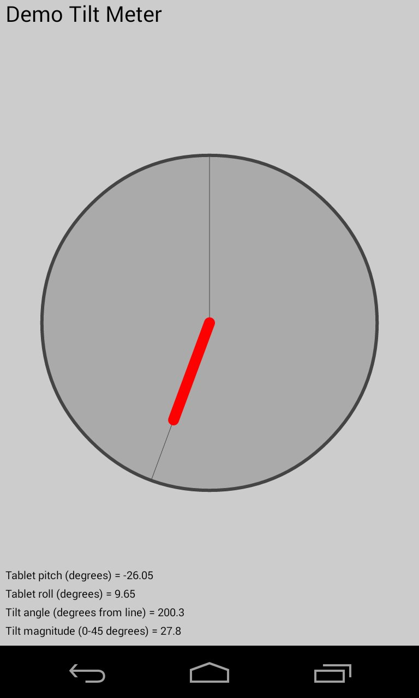
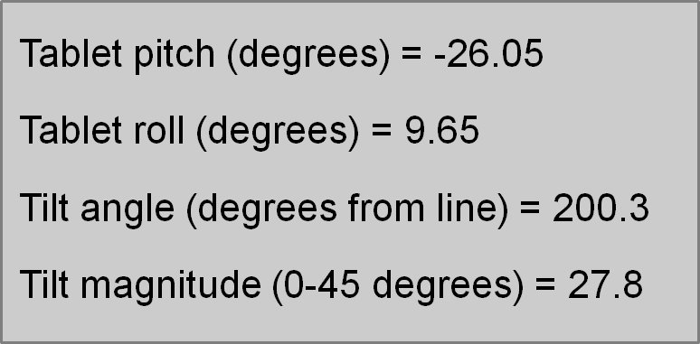
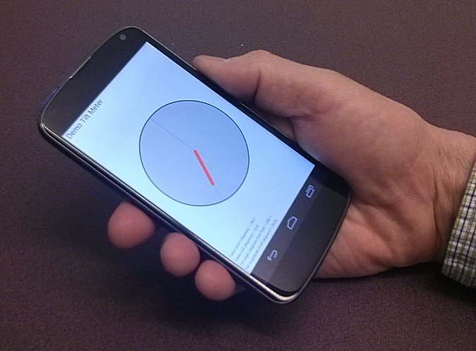
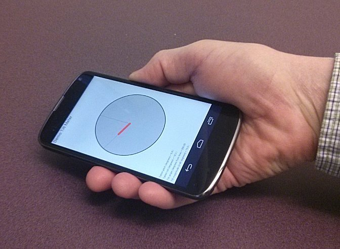
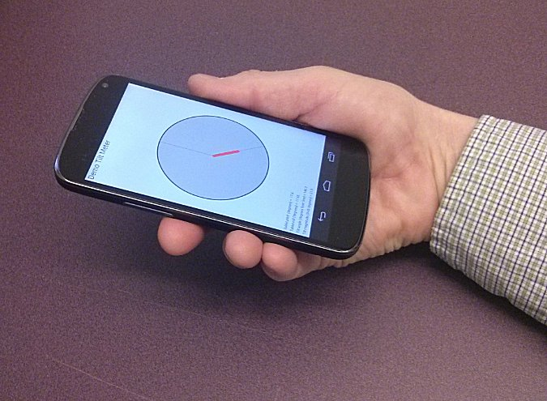
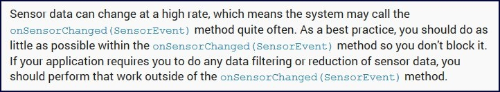

- java.lang.Object
-
- Activity
-
- ca.yorku.eecs.mack.demotiltmeter.DemoTiltMeterActivity
-
public class DemoTiltMeterActivity extends ActivityDemo_TiltMeter - demo application that displays a tilt meter. Related information:See Demo_Sensors for topics and links.
This demo uses the Android sensors to determine the angle and magnitude of device tilt relative to a reference line on a flat surface. The tilt angle and tilt magnitude are displayed as a needle in a meter. Upon launch, the user is presented with a setup dialog. See below. Radio buttons are used to set the sensor mode (described below). A spinner is used to set the sensor sampling rate (as in Demo_Sensors). After choosing a sampling rate and sensor mode, the main activity begins when the user taps "OK". The tilt meter appears with the needle indicating the position of the device relative to a flat surface (below left).  The meter is an instance ofTiltMeter, a custom-designed class, sub-classed fromView. The UI also outputs the device pitch and roll (as reported by the sensors) and the overall tilt angle and tilt magnitude (discussed below). Compare the measures reported above (image on right) with the magnitude and position of the needle in the tilt meter. From this information, we can infer the position of the device relative to a flat surface. As the user moves the device about, the magnitude and direction of the meter's needle are adjusted to correspond to the device's tilt angle and tilt magnitude. Some examples follow.   The device's rotation about the x-axis (pitch) and the y-axis (roll) are available from the device sensors. For this demo, we need to aggregate these measures into the device's overall tilt angle and tilt magnitude. Tilt angle (tiltAngle) is the overall angle of device relative to an arbitrary reference line on the device, such as "straight ahead". Tilt magnitude (tiltMagnitude) is the angle of device tilt relative to a flat surface, measured at the reference line. These are computed as follows:float tiltAngle = tiltMagnitude == 0f ? 0f : (float)Math.asin(roll / tiltMagnitude) * RADIANS_TO_DEGREES; float tiltMagnitude = (float)Math.sqrt(pitch * pitch + roll * roll);The following additional explanation may help in understanding the math above. First, think of tilting a surface and then rolling a ball down the surface. Consider the line formed by the path of the ball. If you LOOK FROM ABOVE and have a reference line for 0 degrees (e.g., straight ahead), thentiltAngleis the angle between the reference line and the line corresponding to the path of the ball. On the other hand, if you LOOK FROM THE SIDE,tiltMagnitudeis the angle between the flat surface and the line corresponding to the path of the ball.This demo was originally developed using Android's
TYPE_ORIENTATIONsensor. This sensor provides exactly the data needed: the pitch and roll of the device relative to a flat surface. However, you will notice in Android Studio that this sensor is flagged as deprecated:
TYPE_ORIENTATIONsensor was deprecated with Android API level 8. In theSensorEventAPI underTYPE_ORIENTATION, we are told,This sensor type exists for legacy reasons, please use
That's fine, but this advice can only be followed if the device has agetRotationMatrix()in conjunction withremapCoordinateSystem()andgetOrientation()to compute these values instead.TYPE_ACCELEROMETERsensor and possibly aTYPE_MAGNETIC_FIELDsensor. However, these sensors are not available on all Android devices. To accommodate this, the demo includes three sensor modes (see table below). Experience suggests thatTYPE_ORIENTATIONworks pretty good as the data are stable and do not require filtering or smoothing. As a suggestion, try each mode (if possible) and see if the movement of the meter's needle is smooth as the device is moved about. The following summarizes the sensor modes used in the demo.
Data smoothing is required when using theSensor Mode Sensor's Used This Mode Is Used If... Example Devices ORIENTATION TYPE_ORIENTATIONthe device has an orientation sensor LG Nexus 4, Samsung Galaxy Tab 10.1 ACCELEROMETER_AND_MAGNETIC_FIELD TYPE_ACCELEROMETERand
TYPE_MAGNETIC_FIELDthe device does not have an orientation sensor but has both an accelerometer and a magnetic field sensor ? ACCELEROMETER_ONLY TYPE_ACCELEROMETERthe device has an accelerometer but no orientation sensor and no magnetic field sensor HTC Desire C, Asus MeMO Pad TYPE_ACCELEROMETERsensor. Smoothing is performed by passing the accelerometer data through a low-pass filter. The filtering code is contained in a simple method calledlowPass, adopted from a blog post by Thom Nichols (click here).This demo was designed to conform to the following advice given in the Sensors Overview API Guide:
 In view of this, we separate the input of sensor data (inonSensorChanged) from the processing of sensor data. InonSensorChanged, as little data processing as possible occurs. The processing of sensor data and updating the UI's view meters is handled separately: using aScreenRefreshTimer, an inner class which is sub-classed fromCountDownTimer. The timer is setup to timeout every 50 ms (corresponding to a refresh rate of 20 Hz). In the timer'sonFinishmethod, the pitch and roll data from the sensors are used to compute the device's tilt magnitude and tilt angle (see code above). These data are then passed to TiltMeter to update the angle and length of the meter's needle.
{kind=link}
{kind=link}
{kind=link}
{kind=link}
{kind=link}
{kind=link}
-
-
Constructor Summary
Constructors Constructor and Description DemoTiltMeterActivity()
-
Method Summary
All Methods Instance Methods Concrete Methods Modifier and Type Method and Description intgetDefaultDeviceOrientation()protected float[]lowPass(float[] input, float[] output, float alpha)voidonAccuracyChanged(Sensor sensor, int accuracy)voidonCreate(Bundle savedInstanceState)protected voidonPause()protected voidonResume()voidonSensorChanged(SensorEvent se)voidonStop()
-
-
-
Method Detail
-
onCreate
public void onCreate(Bundle savedInstanceState)
-
getDefaultDeviceOrientation
public int getDefaultDeviceOrientation()
-
onResume
protected void onResume()
-
onPause
protected void onPause()
-
onStop
public void onStop()
-
onAccuracyChanged
public void onAccuracyChanged(Sensor sensor, int accuracy)
-
onSensorChanged
public void onSensorChanged(SensorEvent se)
-
lowPass
protected float[] lowPass(float[] input, float[] output, float alpha)
-
-